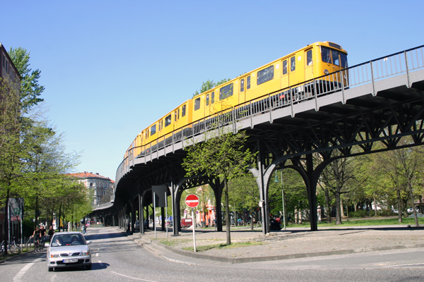

About Me
I completed my year abroad in Berlin from August 2015 until June 2016. As I study History and German I only needed to spend time focusing on one language.
When I arrived in Berlin there were loads of things I had to sort out and think about which I hadn't known before going. I thought about how much easier it would have been if all the information had been grouped together for me before I went, so this is what this site is trying to do. I hope you find it helpful!
Where in Berlin?
One of the first things to do is to decide where in Berlin you want to live. This will partly be based on where you're working or studying, but here is a quick overview of the characters of the different areas of the city.
MITTE

KREUZBERGPRENZLAUER BERG
Anmeldung
One thing that Germans have to do that we don't is their Anmeldung. If you are moving to a German city for more than three months you are supposed to do this. It is a nuisance though, so do you have to? Here are some reasons why you should:
You can only set up a bank account with an Anmeldung certificate
Many other processes in German life (e.g. joining a football team) require one
It is illegal not to
So how do you actually do your Anmeldung? The hard bit is getting an appointment. Because so many people are trying to move to Berlin all the time, appointments are booked up literally months in advance. You can use this link to search and book appointments. If you are planning to move to Berlin in a few months time, now is when you should be booking one.
But I move out in a week and have no appointment! This isn't a huge problem. People with appointments often have to cancel them and then they become available again online. This just means you will have to spend a lot of time searching through the page.
All booked!